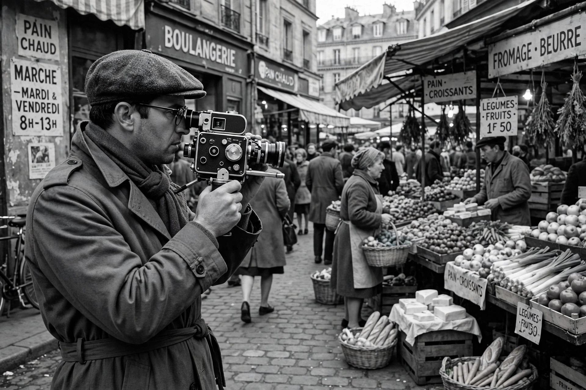

| Years active | c. 1960–present |
|---|---|
| Country | France (origin); international |
| Major figures | Jean Rouch, Edgar Morin, Chris Marker, Jean-Luc Godard (early) |
| Key film | Chronique d'un été (Chronicle of a Summer, 1961) |
| Influences | Dziga Vertov's Kino-Pravda; Griersonian documentary |
Cinéma vérité (/ˈsɪnɪmə ˌvɛrɪˈteɪ/; French: [sinema veʁite], "truthful cinema") is a style of documentary filmmaking developed by Edgar Morin and Jean Rouch, inspired by Dziga Vertov's Kino-Pravda ("film truth") newsreels. It combines improvisation with the use of the camera to unveil truth or highlight subjects hidden behind crude reality. It is sometimes called observational cinema, if understood as pure direct cinema: mainly without a narrator's voice-over.
The movement became possible around 1960 with the arrival of lightweight sync-sound equipment — notably the Nagra tape recorder and quiet 16mm cameras such as the Éclair NPR — which freed documentary from the studio. Rouch, an anthropologist who had made ethnographic films in Africa, collaborated with sociologist Edgar Morin on Chronique d'un été (1961), which asked Parisians "Are you happy?" and openly showed the filmmakers questioning their own methods on screen.
Unlike the "fly-on-the-wall" ideal of American Direct Cinema (D. A. Pennebaker, Richard Leacock, the Maysles brothers), vérité in Rouch's sense treated the camera as a catalyst: its presence provokes behaviour that reveals truths unavailable to passive observation. The filmmaker participates, interviews subjects, and may stage situations to elicit genuine response. Where John Grierson's British school shaped actuality with commentary and montage, vérité sought meaning in unscripted encounter and synchronous speech.
Cinéma vérité reshaped documentary, newscast reportage, and fiction alike; its handheld immediacy fed into the French New Wave and later movements such as Dogme 95, and its ethics — about consent, intervention, and the camera's effect on reality — remain central debates in nonfiction filmmaking and reality television.